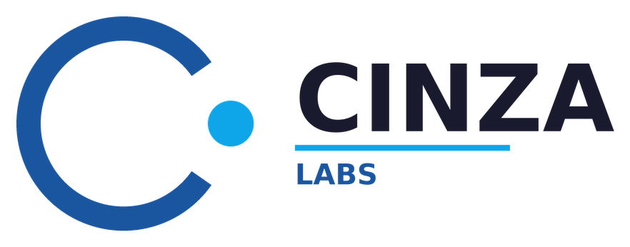

CINZA Research HubCINZA Research Hub
Le pôle académique et scientifique de CINZA Labs : accompagnement scientifique, académique et analyse de données, en français et en anglais.The academic and scientific arm of CINZA Labs: scientific and academic support and data analysis, in French and English.

CINZA Research Hub est un service de CINZA Labs, dont je suis le fondateur et le CEO. CINZA Labs est en cours de formalisation. Au sein du Hub, je travaille comme consultant en recherche. Slogan : « Analyse, rigueur, réussite ».CINZA Research Hub is a service of CINZA Labs, of which I am the founder and CEO. CINZA Labs is being formalized. Within the Hub, I work as a research consultant. Motto: “Analysis, rigor, success”.
Pour quiWho it is for
ÉtudiantsStudents
Médecine, santé publique, sciences économiques et sociales. Mémoires, TFC et thèses.Medicine, public health, economics and social sciences. Dissertations, final-year projects and theses.
Chercheurs et professeursResearchers and professors
Accompagnement méthodologique, analyse des données et bases de données prêtes à l'emploi.Methodological support, data analysis and ready-to-use databases.
ONG et institutionsNGOs and institutions
Collecte de données de terrain fiables et analyse, à travers mon service d'analyse de données.Reliable field data collection and analysis, through my data analysis service.
Huit pôles de serviceEight service areas
A. Analyse de donnéesA. Data analysis
Préparation, analyse descriptive et inférentielle, régressions, visualisation et interprétation en langage simple.Preparation, descriptive and inferential analysis, regressions, visualization and interpretation in plain language.
B. Collecte de donnéesB. Data collection
Conception du questionnaire, digitalisation (KoboToolbox, Google Forms, Microsoft Forms), test et export des données.Questionnaire design, digitalization (KoboToolbox, Google Forms, Microsoft Forms), testing and data export.
C. Rédaction scientifiqueC. Scientific writing
Rédaction des résultats, discussion scientifique, reformulation et normes APA, MLA ou Vancouver.Writing up results, scientific discussion, rewording and APA, MLA or Vancouver standards.
D. Contrôle qualitéD. Quality control
Détection de plagiat et de contenu généré par IA, correction linguistique en français et en anglais.Plagiarism and AI-generated content detection, language correction in French and English.
E. Services premiumE. Premium services
Coaching pour le mémoire, formation à tous les outils d'analyse de données (SPSS, R, Stata, Python, Excel, Power BI…), préparation de la soutenance.Dissertation coaching, training in all data analysis tools (SPSS, R, Stata, Python, Excel, Power BI…), defense preparation.
F. Résumés académiques (en préparation)F. Academic summaries (in preparation)
Fiches de révision par cours et par promotion, construites à partir du syllabus et des anciens sujets.Revision sheets by course and class, built from the syllabus and past papers.
G. Bases de données pour chercheurs (en préparation)G. Databases for researchers (in preparation)
Bases académiques prêtes à l'emploi, issues de collectes digitales.Ready-to-use academic databases built from digital collections.
H. Accompagnement rechercheH. Research support
Identification de sujets et de problématiques, accompagnement méthodologique à la rédaction, sans rédiger à la place du chercheur.Identifying topics and research questions, methodological support for writing, without writing in the researcher's place.
Comment je travailleHow I work
- Prise de contactFirst contact
Par WhatsApp ou par e-mail : tu décris ton projet et ton délai.By WhatsApp or e-mail: you describe your project and deadline.
- Analyse du besoinNeeds analysis
Je repère le ou les services concernés.I identify the service or services involved.
- Proposition et devisProposal and quote
Un pack ou des services à la carte, avec le prix et le délai.A package or services à la carte, with price and deadline.
- ExécutionDelivery of the work
Collecte, analyse ou rédaction, avec des nouvelles régulières.Collection, analysis or writing, with regular updates.
- Livraison et suiviHandover and follow-up
Résultats en Excel, SPSS, PDF ou Word, puis conseils après livraison.Results in Excel, SPSS, PDF or Word, then advice after delivery.